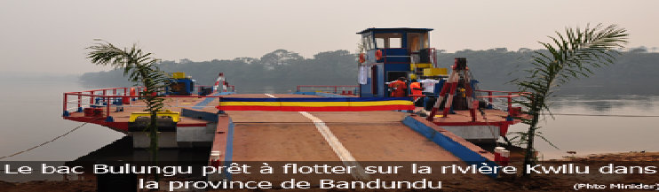

ACTIVITES PRINCIPALES
MAISONS ET CHAINES DE COMMUNICATIONS
Bienvenue dans la nouvelle province
de KWILU
l'ancien district de kwilu de la province de bandundu devient une des nouvelles pronvinces en application des dispositions de la constitutiion adoptée en mai 2005. la province de kwilu est divisée en cinq territoires, eux memes divisés en quanrant-neuf secteurs et huit cités au totales.
dont voici les territoires:
-bagata
-bulungu
-gungu
-idiofa
-masi-manimba